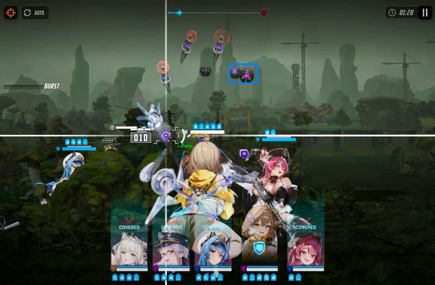
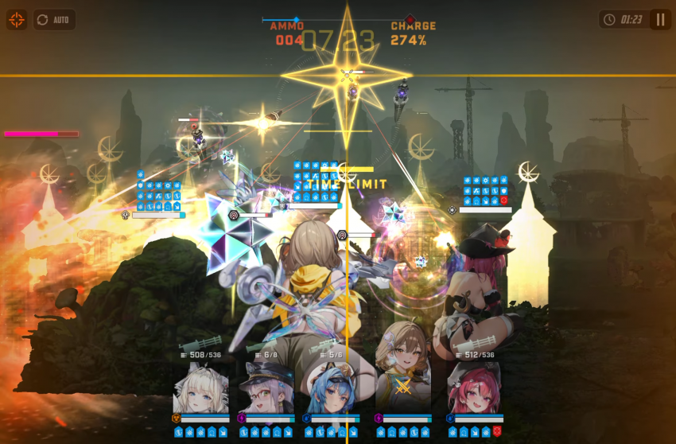
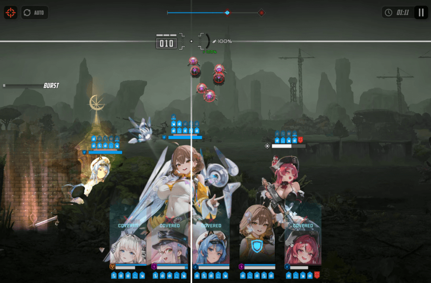

1. 아니스 평타로 2번으로 밑에 지상몹 쳐서 풀버충 채운뒤에 3번째 평타로 파란 네모의 탱탱볼 조준할것
(35-26까진 가운데 탱탱볼 조준해도 됐는데 36-7은 개인적으로 해보니 무조건 맨 오른쪽놈 조준해야 안터졌음, 36-7이 딜컷 좀 빡셈)
3번째 평타가 탱탱볼에 맞기전에 풀버가 켜져야함, 만약 별사탕이 뒤에 긴 막대기 같은몹에게 날아가서 탱탱볼이 2이상 사라지면 리트
1개만 사라졌으면 네온 쓰고 있으면 탱탱볼이 네온에게 타게팅하면 네온 패시브로 1코 벌수 있음

2 탱탱볼 3마리 다 터졌으면 뒤에 막대 3마리 쟤들도 크라운 실드 없는놈한테 맞으면 무조건 한방컷이니 한대 쏴서 잡기
그와 동시에 아래 시드몹(서브타겟) 되어있는 두마리중 안움직였던 놈(쏠 준비하고 있는놈) 먼저 점사
만약 2마리 다 사격 대기중이었다면 메스트 바칠생각이나 네온 무적이 이어지기를 바래야됨

3. 두번째 웨이브 탱탱볼은 태보로 피할거, 오토사격 켜져있는지 확인하고 전체 엄폐후 대기
탱탱볼 돌진할때 전체엄폐 풀면 끝, 버충 미리 안해두는건 옆에 잡몹 평타도 개피일때 맞으면 아프고 탱탱볼 태보 삐끗할수 있어서 안전하게 하려고
태보로 피한뒤 버충 채우고 크라운 잡고 스택확인, 18스택정도 맞추고 보스 나오면 무적킨뒤 조지면 됨
끗